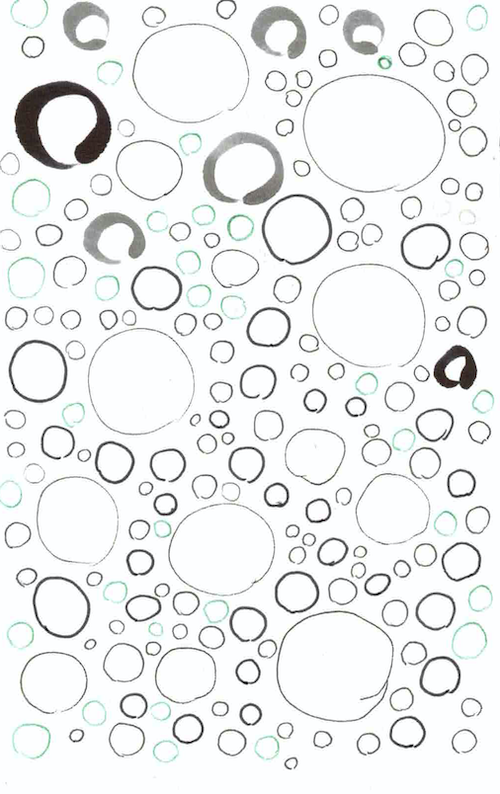
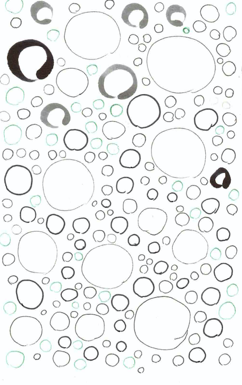

33 Drawings, 1 Year
Prompts to fill our year with art together.
Send a picture or scan of an image, and a few words on its making, and we can track & share our 2d adventures here.
November 30, 2020
Prompts to fill our year with art together.
Send a picture or scan of an image, and a few words on its making, and we can track & share our 2d adventures here.
November 30, 2020

Fill a whole page (or 5) with circles. Attempting circular circles, but forgiving charismatic variants. Color and size variation for added character.
Add a few words about the when, where, feelings, sources or materials by which this picture happened
 


From life if you find one that will hold still, or the opportunity presents itself and you're swift, or from a photo.
Add a few words about the when, where, feelings, sources or materials by which this picture happened
Pick a view, object, figure or image that's compelling, easy, has a challenge you want to practice, or features you want to learn, and draw it over and over again (go for more than 5 if inspired).
Add a few words about the when, where, feelings, sources or materials by which this picture happened
USPS postcard stamp regulations state a post card must be:
Add a few words about the when, where, feelings, sources or materials by which this picture happened, and who it was sent to or why.
For your own purposes and at your own whimsy, when it strikes.
Add a few words about the when, where, feelings, sources or materials by which this picture happened
Just color. See how they play with each other. Hopefully have some AbEx/optical illusion fun.
Add a few words about the when, where, feelings, sources or materials by which this picture happened, and who it was sent to or why.
Probably a thing we baked together.
Add a few words about the when, where, feelings, sources or materials by which this picture happened